August 11 - 18, 2010
| We had amazing weather for our annual summer
trip to visit the Casazza clan this year. It was a really great
trip, as you will see. |
|
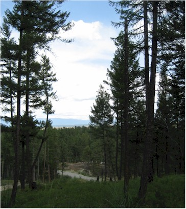 |
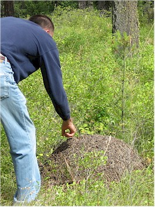 |
| This is the view from 10 acres we have for sale near Kalispell. You can see the Big Mountain ski slopes from here - it is very close to town but feels so quiet and remote here - it's awesome! |
Eric found a giant ant hill and just couldn't leave it alone. I found an in-ground wasp nest by almost using it as a latrine - that was a close one. |
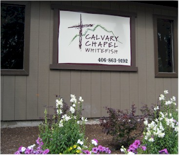 |
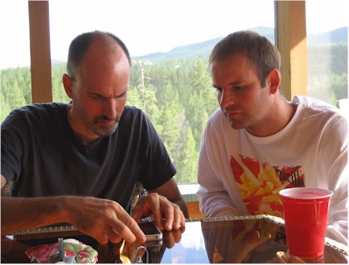 |
| We stopped at Calvary Chapel Whitefish in hopes of meeting the pastor, but he was preparing for Wednesday night services. It's a nice place. |
Here my computer wizard shows off his new iPhone 4 to brother Dallas There's hardly any consternation being displayed at all. |
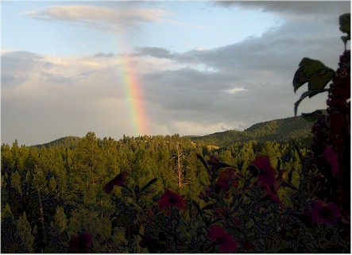 |
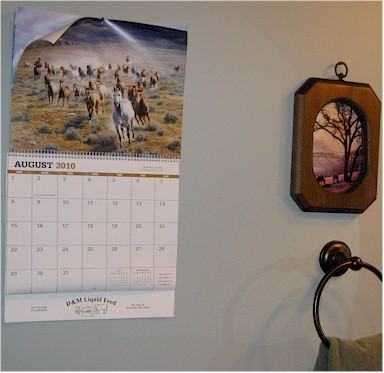 |
| A lovely rainbow as seen from Dan & Rose's porch | My uncle Larry's calendar looks great at the Casazza home in MT! |
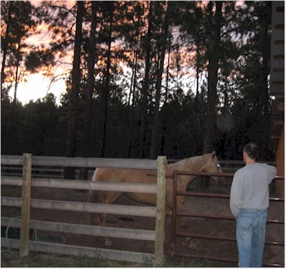 |
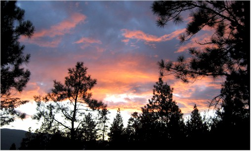 Sunset at the Ponderosa |
| The Saturday night before we arrived on Wednesday, Dan Sr. had been thrown from this horse and injured pretty badly. He had a dislocated shoulder, a cracked pelvis, and three cracked ribs. He got up afterward, caught the horse, and walked back to the house. He was up and around by Thursday and seemed nearly healed within the week. We are very thankful that God protected him from much worse injuries that could have happened.
|
|
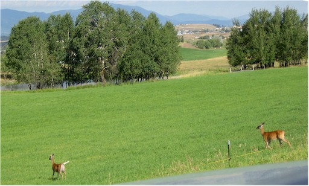 |
|
| There were so many deer around this year that I got tired of taking
pictures of them. I saw more deer than dogs this year! They are beautiful creatures though. |
|
|
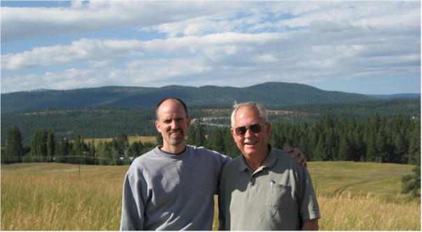 Here our friend Drew Bellon shows us the 40 acres we're
buying near our other land. |
|
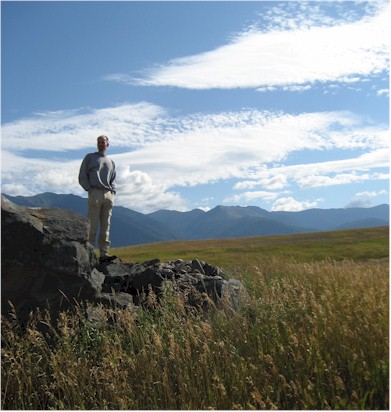 |
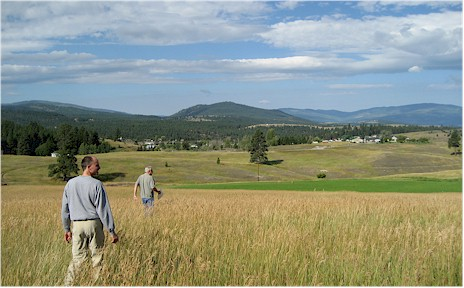 |
| Eric surveys his newest land purchase | Drew and Eric walk the corners |
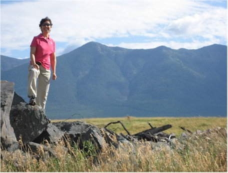 Queen of the mountain |
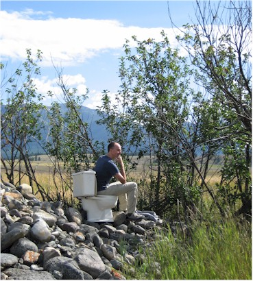 |
| And perched on his throne, we find the king of the rock pile | |
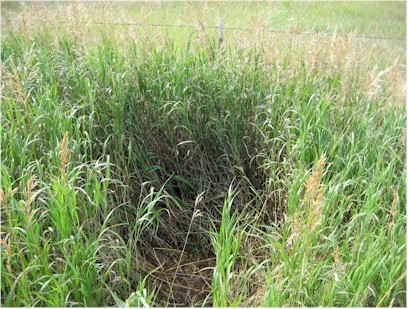 |
|
| In case you haven't seen a deer bed. It might have also been an
elk bed instead, it was kind of big. |
|
|
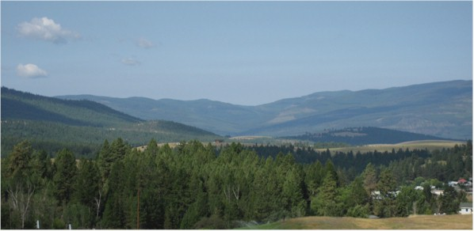 The beautiful Tobacco Valley |
|
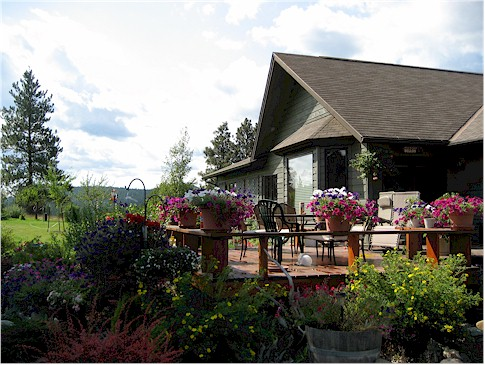 |
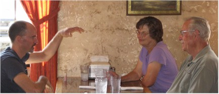 |
| Speaking of beautiful, this is Drew & Carol's house | Here Eric tells a tall tale over dinner with Drew & Carol at Four Corners |
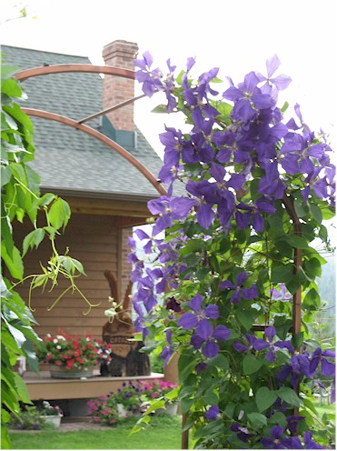 |
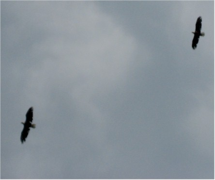 |
| Rose always has flowers showing off for us when we get there. | Two eagles were circling and soaring overhead that evening. |
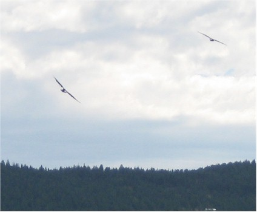 |
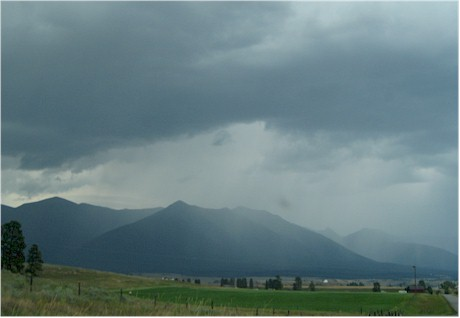 |
| Another shot of the eagles enjoying themselves on the wind currents. | You can see the rain from way off in Montana |
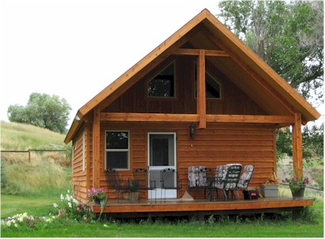 |
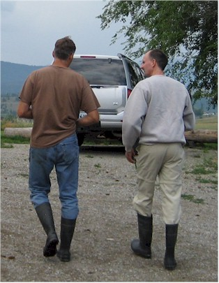 |
| The lovely little cabin looks even nicer this year with a yard and flowers. | Mark & Eric in the latest high- fashion irrigation boots |
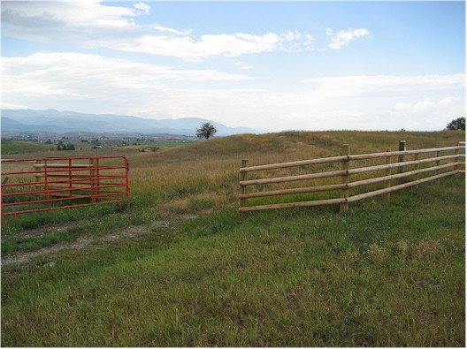 |
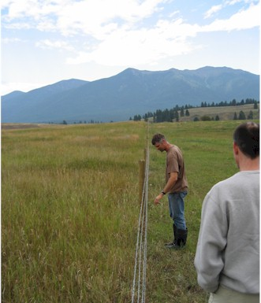 |
| Our beautiful new fence! Thank you Dan, Dallas, and Larry. | It is so straight, it's unreal! |
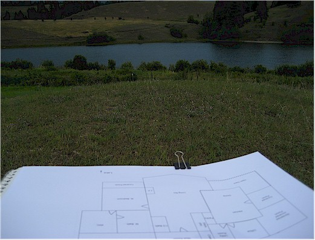 |
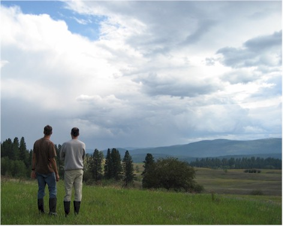 |
| Our future house plans as seen from the future build site. We hope! | Deep thoughts about the land. |
|
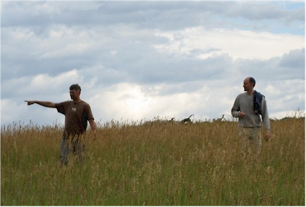 There's always a lot of pointing involved in Casazza conversations. |
|
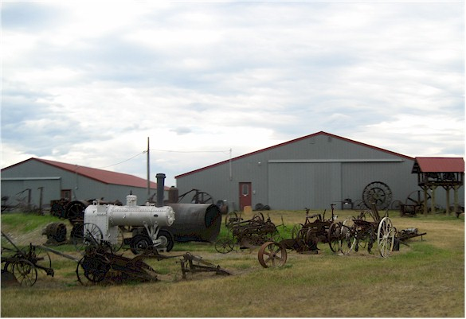 |
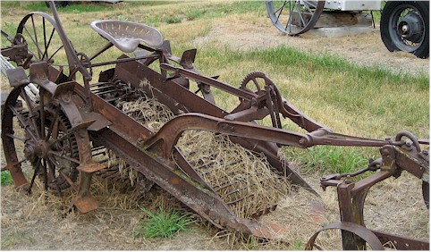 |
| We got to tour the Lundeen brothers' museum in Eureka, what a neat place! | This potato digger was used by the Casazzas in the past - they remembered it fondly |
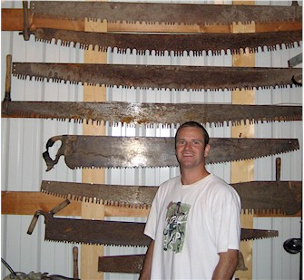 |
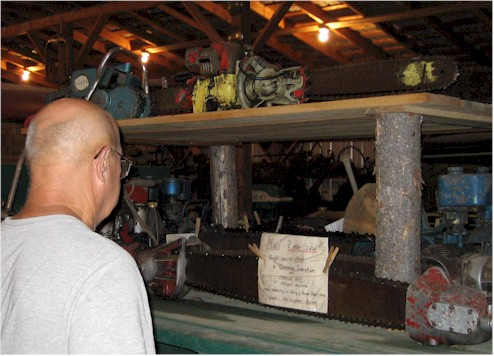 |
| Dallas with the saws | Don Lundeen giving the tour |
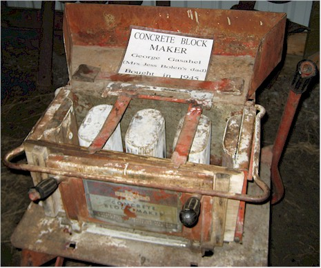 |
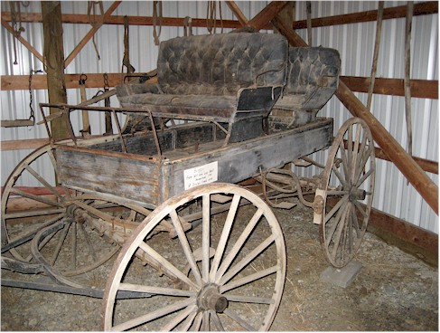 |
| Concrete block maker, purchased in 1945. I thought it was neat. | I was just reading a book called, "Dancing at the Rascal Fair"
about the settling of Montana in the 1890's - early 1900's. I think this buggy would have been in use then. |
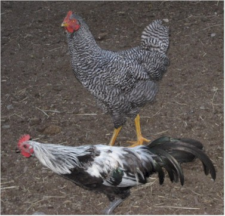 |
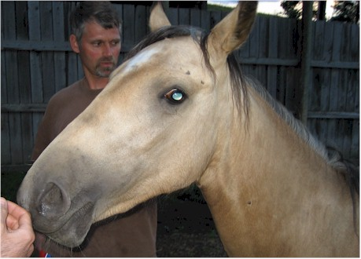 |
| Some of the chickens Mark has out at the ranch house. |
This is Fancy - she is the sweetest, most people-loving horse I've ever
met. I think she would curl up at the foot of your bed if she'd only fit. |
|
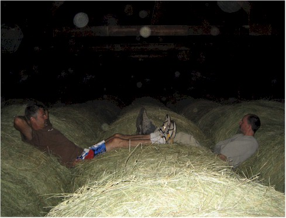 |
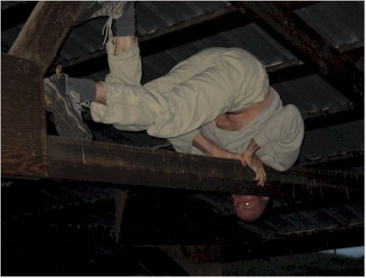 |
| Chillin' on top of the hay in the barn |
Of course, Eric just has to climb anytime he's near something climb-able. (Please excuse the gratuitous shot of the washboard abs.) |
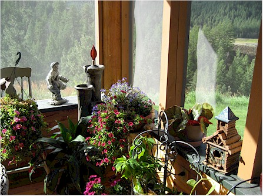 |
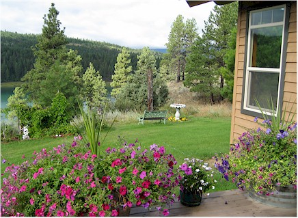 |
| A view of the porch at the Ponderosa | Looking out from the deck at the lake and the lovely flowers |
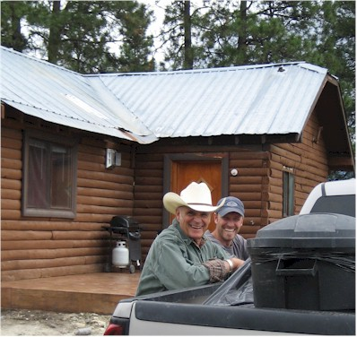 |
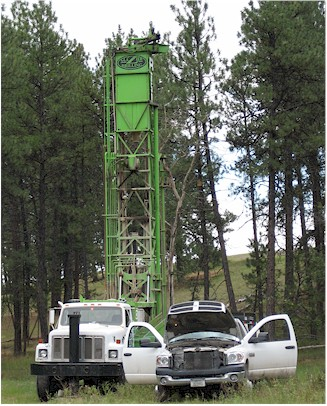 |
| Dan & Jeb at Jeb & Amy's new cabin above Lake Costich | The water well was going in while we were there. |
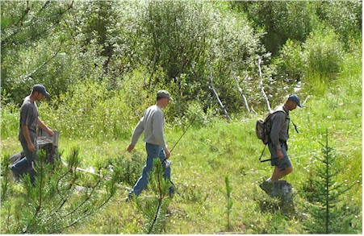 |
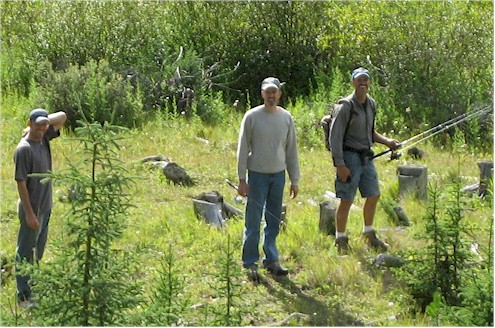 |
|
The boys - fishing at Trego on the range |
|
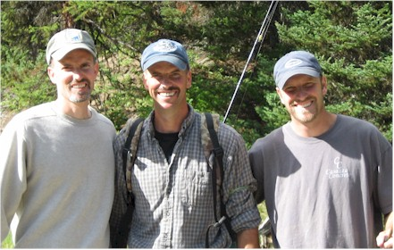 Can you tell they're related?! |
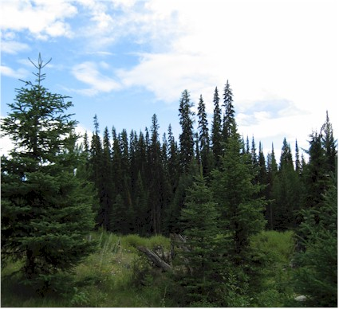 |
| It was beautiful up there. I kept wandering off without my bear
spray so I'd have to go back to the car and get it over and over. |
|
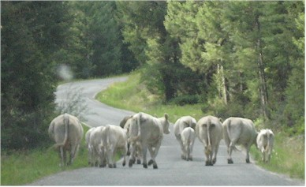 |
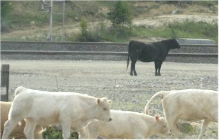 |
| On the drive out we ran into a group of D-C cattle (not literally!) |
Then we saw that one of them had gotten across the cattle guard and onto the railroad tracks. Not a good situation. |
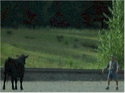 A long-distance shot of Dan, herding her toward a break in the fence that Jeb found. |
|
| Turns out she didn't need a break in the fence, she walked right across the cattle guard. Here they examine all its deficiencies. |
|
Isn't that lovely? |
|
| Since the cows were settled, Eric went back to fishing. | |
Views of the mountains in Eureka |
|
| Sleepy Aubry with Uncle Eric | |
|
|
|
|
Sunset on our property at Lake Costich |
|
| Deep thoughts at the campfire, where we were burning boards painted with lead-based paint. |
The Larry Casazza crew, mesmerized by the campfire. |
| Most of the Jeb Casazza crew admiring the fire as well. (Madison had already zonked out.) |
The mountains as seen from Jeb & Amy's cabin early the next morning. They let us use their camper twice - it was very nice. |
More views from the cabin. |
|
| Cooper, feeling a little shy | Here Aubrey helps him find his dad to ask for shoes. |
| I couldn't resist a close-up of this beautiful Clematis in bloom. |
We had to watch them to make sure the competition didn't get too rough and turn violent. (J/K!) |
|
|
|
| The Casazza Ranch as seen from above | Happy Casazzas, surveying their domain |
The universal "television face" |
|
| Looks like Amy got Eric with a stinger of a remark - burn! | |
| Erik and Braden having a consultation with mom. | Mark, handling business from the 4-wheeler |
Amy, Rebecca, and Mary Beth |
|
| Uncle Eric greets Aubrey and "my Cody" | |
| Now Lucas uses the 4-wheeler for an office. Luckily our cell
phones don't work in Eureka so we didn't have to take our calls. |
Not sure what Catherine is doing here, it reminds me of a little trick Jeb does since he lost the tip of his finger. |
Dallas, returning from fishing with Coulter, Erik, and Braden |
|
| A 4-wheeler full of Erics (and Eriks) on the move | |
| Cooper is happiest when he's with Mom or Dad | Here we get to see Braden too. |
| How's that for a view? | Here we are at a "pamper the girls" afternoon Rose put on for us. She made us a first-class tea party, set up massages, foot baths, jewelry making, you name it! |
| Here we share an inside joke about the shape of some of the cookies. | June O'Connor demonstrates the massage chair while Tipper supervises. |
| The spoilees, ready for the spoiling to start. | Amy goes first in the foot bath - she ain't scared! |
| I enjoyed the jewelry making with the girls | Here Eric does phone-holding duties so that Dan can multi-task. |
The ranch |
|
| Coulter, Aubrey, and Dallas at Jeb & Amy's cabin | |
More mountain views |
|
| Here I get to start a steep downhill race between Erik & Braden. I did mention to them that running downhill often results in some end-over-end rolling downhill. Braden proved this point in about 30 seconds. |
|
|
Aubrey is ready for driving lessons |
|
| Braden is a tough one, he tumbled about 3 times, popped up, and kept right on running. |
|
| Hey, it's not my fault. The mountains wouldn't stop being pretty. | Lucas and his boys riding off into the sunset. |
| You can just see the guys in the boat fishing across the lake. |
More Casazza pointing. This was taken from Amy's kayak - she and I were paddling around the lake. |
| They look kinda guilty. | Another campfire at our property - this one is smoky. |
| Here we are gathering for the pre-lunch prayer after church on Sunday. | Car load o'Casazzas |
| Aubrey practices the Casazza pointing technique of communication |
Lane is bushed from being carried all over the place - that must be exhausting! |
| Here the family prepares to go round up some cattle. If the
old-time ranchers could only see this - forget horses when you have mini-vans! |
While the rest of the family went to work cows, Amy and I took a kayak trip on the Tobacco River. It was fun! |
| The Ponderosa (Dan & Rose's house) as seen from the water below | The Hoodoos - they are just a little way from the Ponderosa |
| Coulter & Jeb - up to no good! |
The next morning Eric & I accompanied Dan & Jeb for more cattle rounding-up activity. It was busier than this earlier, I promise! |
| They have me stationed on a side road to prevent the cattle they are about to herd by from turning onto my road. This train went by while I waited. |
This squirrel also ran by. Can you believe how small the squirrels are in Montana? I thought they were chipmunks for ages! |
| Here come the cattle herders now, with their imaginary cows. (The cattle didn't cooperate and had run off in the other direction.) |
We decided to take the few we had and call it good. |
| This one sticks her nose out to yell, "FREEDOM" in cow talk. | Here the guys lounge in the style of the cowboy silhouette behind Dan. |
| We ate apples off this tree all week - they were excellent! |
Here we go to "The Cutting Board" so the boys can load up on a Bubba Burger for lunch. |
| A view of the barn and cattle truck | Dallas & Aubrey, chillin' at the ranch |
| Here we are on a trip with Jeb & Amy at Weasel cabin |
Uncle Eric talks Aubrey into the freezing water, but only for about 20 seconds. |
Beautiful flowers by the river |
|
| More beautiful flowers - on a beautiful girl! | |
| The whole gang taken via a timed shot. | Fishing at one of the Therriault lakes. |
|
Some final scenes at the lake before we headed back to town. |
|
| Tipper dog! | Dan & Dan, raiding the garden for supper |
| Here we say farewell to Dan & Rose | We stopped for an hour of watching the elk and deer move through the Costich
area, then headed to Jeb & Amy's house for our last night and early flight out. |